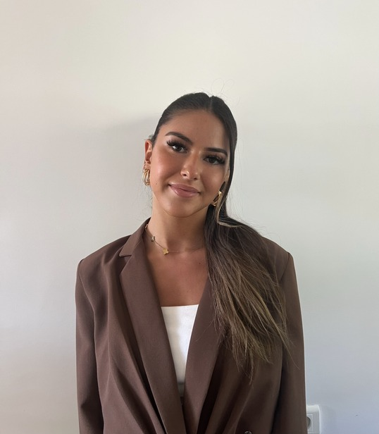

BIENVENUE DANS MON UNIVERS
 margot.d.boudoux@gmail.com Tel : 0650311515
À propos de moi
Je n’ai jamais été de ceux qui savent depuis l’enfance ce qu’ils veulent faire. Je ne
rêvais pas d’un métier en particulier, mais j’ai toujours eu une vraie curiosité pour
ce qu’on ne voit pas forcément : comment les entreprises fonctionnent de
l’intérieur, comment elles s’organisent, comment elles s’adaptent.
C’est ce questionnement qui m’a poussée, après un bac général spécialité
Mathématiques et Sciences Économiques et Sociales, à me lancer dans un BUT
Gestion des Entreprises et des Administrations, avec une spécialisation en
Gestion, Entrepreneuriat et Management des Activités. J’ai choisi de suivre ce
cursus en alternance, pour allier théorie et pratique.
En trois années, j’ai eu l’occasion de découvrir différents environnements
professionnels, de participer à des projets variés, et surtout de développer des
compétences en gestion, en analyse de données, en communication interne et en
amélioration des processus.
Ces trois années m’ont véritablement transformée, grâce à des expériences
marquantes en entreprise comme en projet d’équipe, qui m’ont permis de mieux
comprendre le monde professionnel, mais aussi de me découvrir moi-même.
Ce parcours m’a permis de prendre confiance, de mieux comprendre mes atouts,
mais aussi de clarifier peu à peu ce vers quoi je voulais me diriger. Aujourd’hui, je
me sens prête à poursuivre mon évolution dans une structure où je pourrai
continuer à apprendre, à collaborer, et à contribuer à l’efficacité collective.